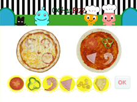
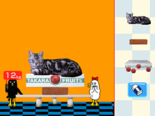

17 |
追加コンテンツ |
 |
|
「あいうえ・おーちゃん」では、29の追加コンテンツを購入して、ゲームを30まで増やせます。ゲームとセットのドリルつき。
購入には、別途Wiiポイントが必要です。
＜購入方法＞
ゲームメニューの「おすすめゲーム」、ママメニューの「お買い物」からインターネットに接続。 Wiiポイントを使って、好きな追加コンテンツを購入できます。一度購入した追加コンテンツは、削除しても、またいつでもダウンロードできます。
●おべんとつめよう
◇4月28日配信開始 ◇400ポイント ◇22ブロック 丸いおにぎりや三角サンドイッチ、いろんな形をバスケットにぴったりつめよう。作品が保存できる。 ※「おべんとつめよう」は「あいうえ・おーちゃん」で使用する追加コンテンツです。 「おべんとつめよう」単体ではあそべません。
 ●へんそうごっこ
●へんそうごっこ◇4月28日配信開始 ◇400ポイント ◇14ブロック おーちゃんに帽子やカツラをつけて変装させよう。いろんなおーちゃんをつくって、保存できるよ。 ※「へんそうごっこ」は「あいうえ・おーちゃん」で使用する追加コンテンツです。 「へんそうごっこ」単体ではあそべません。
●あめのひスタイル
◇4月28日配信開始 ◇400ポイント ◇22ブロック 雨の日にはどんなものを着る？ 何を使う？ お店で好きなものをえらんで、記念写真とろう！ 保存ができるよ。 ※「あめのひスタイル」は「あいうえ・おーちゃん」で使用する追加コンテンツです。 「あめのひスタイル」単体ではあそべません。
●はなびをつくろう
◇4月28日配信開始 ◇400ポイント ◇16ブロック オリジナルの花火をつくって、ドーンと打ち上げよう！ ギャラリーで作品を見せっこできるよ。 ※「はなびをつくろう」は「あいうえ・おーちゃん」で使用する追加コンテンツです。 「はなびをつくろう」単体ではあそべません。
●リズムであそぼう
◇4月28日配信開始 ◇400ポイント ◇8ブロック リズムに合わせて、のびたり、縮んだり。いろんな動きと音を組み合わせてあそぼう！保存もできる。 ※「リズムであそぼう」は「あいうえ・おーちゃん」で使用する追加コンテンツです。 「リズムであそぼう」単体ではあそべません。
●なぞなぞかるた
◇4月28日配信開始 ◇300ポイント ◇36ブロック なぞなぞに答えるかるた。問題をよーく聞いて、答えの札を探そう。お手つきにも気をつけて！ ※「なぞなぞかるた」は「あいうえ・おーちゃん」で使用する追加コンテンツです。 「なぞなぞかるた」単体ではあそべません。
●どんぶりあわせ
◇4月28日配信開始 ◇200ポイント ◇14ブロック どんぶりのふたを開けて、中身を合わせよう。２人対戦もあるから、親子で楽しめるよ。 ※「どんぶりあわせ」は「あいうえ・おーちゃん」で使用する追加コンテンツです。 「どんぶりあわせ」単体ではあそべません。
●マッチング
◇4月28日配信開始 ◇200ポイント ◇18ブロック カードの同じ絵を合わせて、おーちゃんたちと対戦しよう！ だれがいちばん強いかな？ ※「マッチング」は「あいうえ・おーちゃん」で使用する追加コンテンツです。 「マッチング」単体ではあそべません。
●いろいろあわせ
◇4月28日配信開始 ◇200ポイント ◇17ブロック 昔と今の道具や、仕事の道具、動物の親子を合わせる神経衰弱。２人対戦もできる。 ※「いろいろあわせ」は「あいうえ・おーちゃん」で使用する追加コンテンツです。 「いろいろあわせ」単体ではあそべません。
●スルスルとんとん
◇4月28日配信開始 ◇300ポイント ◇24ブロック ばらばらの絵や数字のパネルをスルスルとんとん動かして、ぴったり合わせて完成させよう！ ※「スルスルとんとん」は「あいうえ・おーちゃん」で使用する追加コンテンツです。 「スルスルとんとん」単体ではあそべません。

●おーちゃんピザ
◇4月28日配信開始 ◇400ポイント ◇22ブロック ハム、トマト、ピーマン…。 お客さんの注文をよーく聞いて、ピザをどんどん焼こう！ ※「おーちゃんピザ」は「あいうえ・おーちゃん」で使用する追加コンテンツです。 「おーちゃんピザ」単体ではあそべません。
●おつかいおーちゃん
◇4月28日配信開始 ◇400ポイント ◇70ブロック 赤ずきんのおーちゃんが、おばあちゃんのうちまで森を通っておつかいをしていくよ。寄り道しないで無事につけるかな？ ※「おつかいおーちゃん」は「あいうえ・おーちゃん」で使用する追加コンテンツです。 「おつかいおーちゃん」単体ではあそべません。
●かってきてね
◇4月28日配信開始 ◇400ポイント ◇48ブロック おーちゃんに頼まれるおつかいできるかな？ メモもないからよーく聞いて買ってきてね。 ※「かってきてね」は「あいうえ・おーちゃん」で使用する追加コンテンツです。 「かってきてね」単体ではあそべません。
●みずのたび
◇4月28日配信開始 ◇300ポイント ◇47ブロック 雨つぶになったおーちゃんと、水の旅をしよう！ 雨は空から落ちて、それからどこへ行くのかな？ ※「みずのたび」は「あいうえ・おーちゃん」で使用する追加コンテンツです。 「みずのたび」単体ではあそべません。
●みずかがみ
◇4月28日配信開始 ◇200ポイント ◇18ブロック 水にうつったおーちゃんたち、なんだか変なところがあるよ。違うところを探してみてね。 ※「みずかがみ」は「あいうえ・おーちゃん」で使用する追加コンテンツです。 「みずかがみ」単体ではあそべません。
●うきしずみ
◇4月28日配信開始 ◇300ポイント ◇25ブロック トマトは水に入れるとうく？ しずむ？ いろんなものを水や油にいれて、実験してみよう！ ※「うきしずみ」は「あいうえ・おーちゃん」で使用する追加コンテンツです。 「うきしずみ」単体ではあそべません。

●じょうぶなたまご
◇4月28日配信開始 ◇300ポイント ◇24ブロック たまごの上にスイカをおくとどうなる？ かなり丈夫なたまご。どれくらい丈夫か確かめてみよう！ ※「じょうぶなたまご」は「あいうえ・おーちゃん」で使用する追加コンテンツです。 「じょうぶなたまご」単体ではあそべません。
●ほねほねレントゲン
◇4月28日配信開始 ◇200ポイント ◇19ブロック おーちゃん先生が、動物たちのレントゲン写真をとるよ。どんなほねが写るのかな？ ※「ほねほねレントゲン」は「あいうえ・おーちゃん」で使用する追加コンテンツです。 「ほねほねレントゲン」単体ではあそべません。
●ちちしぼり
◇4月28日配信開始 ◇200ポイント ◇17ブロック ミルクから何ができる？リズムに合わせてリモコンふって、牛のおちちをしぼろう！バターも作るよ。 ※「ちちしぼり」は「あいうえ・おーちゃん」で使用する追加コンテンツです。 「ちちしぼり」単体ではあそべません。
●すしたべほうだい
◇4月28日配信開始 ◇400ポイント ◇50ブロック 釣った魚のおすしが食べ放題！おーちゃんとのんびり釣りを楽しもう！ 何がかかるかな？ ※「すしたべほうだい」は「あいうえ・おーちゃん」で使用する追加コンテンツです。 「すしたべほうだい」単体ではあそべません。
●ノワールやき
◇4月28日配信開始 ◇400ポイント ◇21ブロック ノワールやきは中味いろいろ。注文された数だけ、ほかほかのノワールやきを焼こう！ ※「ノワールやき」は「あいうえ・おーちゃん」で使用する追加コンテンツです。 「ノワールやき」単体ではあそべません。
●さかなつり
◇4月28日配信開始 ◇300ポイント ◇38ブロック はらぺこネコさんに、魚を釣って食べさせてあげよう。何びき釣れたか数えてね。 ※「さかなつり」は「あいうえ・おーちゃん」で使用する追加コンテンツです。 「さかなつり」単体ではあそべません。
●あわせてピッタシ！
◇4月28日配信開始 ◇400ポイント ◇15ブロック 合わせて５や10になるふたつの数字を積み重ねて、ブロックを消そう。速さが選べるよ。 ※「あわせてピッタシ！」は「あいうえ・おーちゃん」で使用する追加コンテンツです。 「あわせてピッタシ！」単体ではあそべません。
●おーちゃんラーメン
◇4月28日配信開始 ◇300ポイント ◇18ブロック お店にきたお客さんの人数は「何組」と「何人」？ 10人ずつしか入れないラーメンやを繁盛させる秘密兵器とは？ ※「おーちゃんラーメン」は「あいうえ・おーちゃん」で使用する追加コンテンツです。 「おーちゃんラーメン」単体ではあそべません。
●バスのおきゃくさん
◇4月28日配信開始 ◇400ポイント ◇16ブロック バスに何人乗って何人降りた？今乗っているのは何人？ バスの中は見えないから、よーく覚えてね。 ※「バスのおきゃくさん」は「あいうえ・おーちゃん」で使用する追加コンテンツです。 「バスのおきゃくさん」単体ではあそべません。
●３びきのこぶた
◇4月28日配信開始 ◇200ポイント ◇38ブロック 大きいの、中くらいの、小さいの。３びきのこぶたに合った大きさのものを渡してあげよう。 ※「３びきのこぶた」は「あいうえ・おーちゃん」で使用する追加コンテンツです。 「３びきのこぶた」単体ではあそべません。
 ●がとをでおおちがい
●がとをでおおちがい◇4月28日配信開始 ◇300ポイント ◇25ブロック 「おーちゃんが、ケーキをたべる」「おーちゃんをケーキがたべる」。「が」と「を」を入れかえて楽しもう。 ※「がとをでおおちがい」は「あいうえ・おーちゃん」で使用する追加コンテンツです。 「がとをでおおちがい」単体ではあそべません。
●とかやん
◇4月28日配信開始 ◇200ポイント ◇21ブロック 「と」と「か」どっちがいい？一字変わるだけで、もらえるものが違うよ。どっちがいいか考えよう。 ※「とかやん」は「あいうえ・おーちゃん」で使用する追加コンテンツです。 「とかやん」単体ではあそべません。
●おてんきさま
◇4月28日配信開始 ◇300ポイント ◇26ブロック 「雨か風かかみなり」「雨と風とかみなり」では、天気はどう変わる？ お天気をつくって、ノワールの絵日記にのせよう。 ※「おてんきさま」は「あいうえ・おーちゃん」で使用する追加コンテンツです。 「おてんきさま」単体ではあそべません。 |
 |
 |
 |